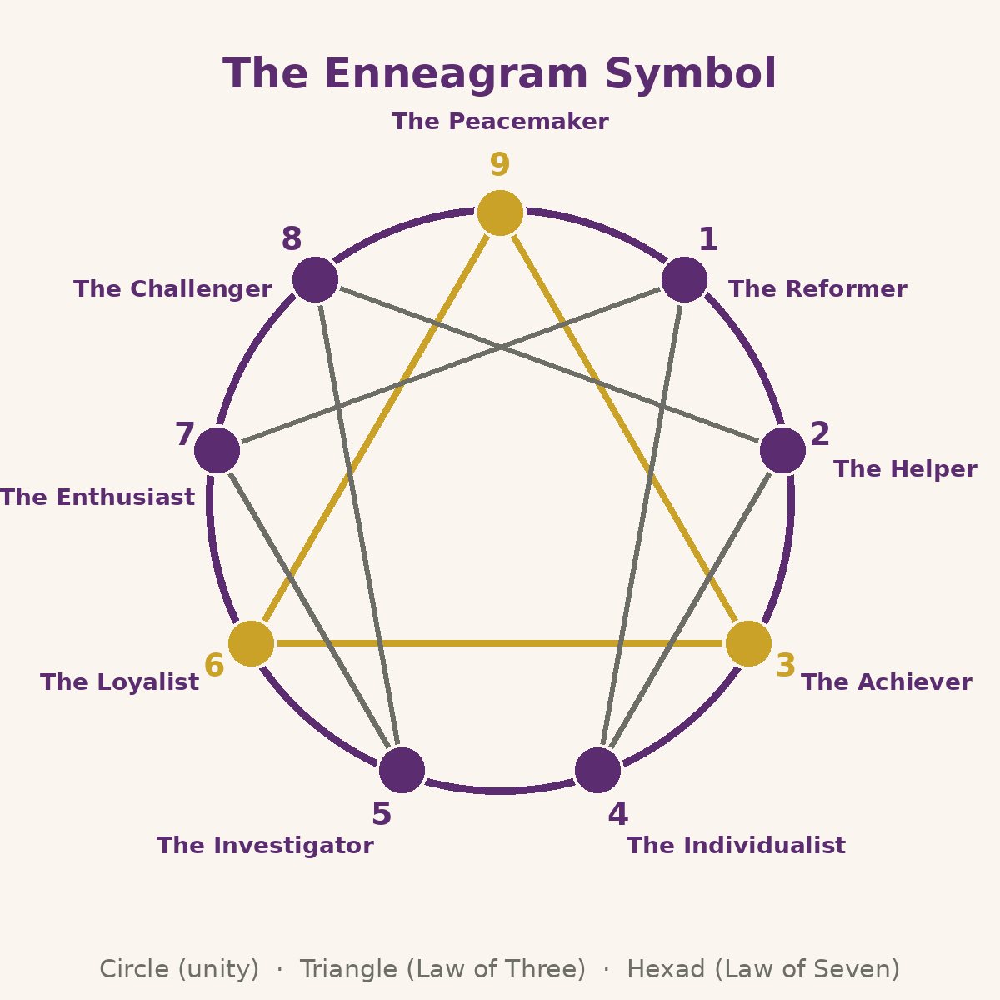
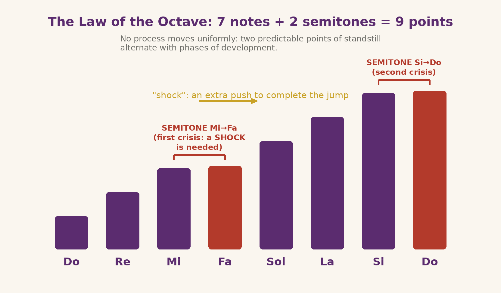

⬤Continue the journey: How It Works →
The Symbol: a drawing that speaks
The Enneagram as we know it today is the result of the work of psychiatrists, psychologists, philosophers, theologians and monks, who brought it into the Western world from different perspectives, making it a powerful tool of psychological introspection and spiritual evolution based on cosmic laws represented by universal numbers and symbols.
LAW OF 7 → 7 + 2 = 9
THE NUMBER 3
According to ancient traditions, the number 3 represents creative harmony: every phenomenon is born from the meeting of an active force (initiative), a passive force (resistance) and a third neutral force that harmonises them. Without the third force, nothing comes into being.- The circle: unity, totality and perfection. A figure without beginning or end, without corners or joints, the symbol par excellence of completeness and geometric perfection: it encloses every possible experience, holding the multiplicity of forms within a single boundary. Some examples:
- an idea ( Triangle: ) must meet a medium (
- L’esade) and a creative synthesis (
The Enneagram incorporates and integrates the symbolic energy of the number 3 and that of the number 7, composing a nine-pointed symbol.
an impulse (Continue the journey: How It Works →
) meets an obstacle (IN DEPTH
The Enneagram as we know it today is the result of the work of psychiatrists, psychologists, philosophers, theologians and monks, who brought it into the Western world from different perspectives, making it a powerful tool of psychological introspection and spiritual evolution based on cosmic laws represented by universal numbers and symbols.
) that overcomes inertia.ENNEAGRAM → 3 + 6 = 9
THE NUMBER 99 is the number of completeness: it contains every digit (1+2+3+4+5+6+7+8+9=45; 4+5=9) and closes the circle to begin again (9+1=10→1). This is why the Enneagram arranges nine points: each point is a different strategy, but all belong to the same Law.→ 7 + 2 = 9
The Law of Seven (the musical octave)THE NUMBER 3
What is an octave?The octave is the musical scale Do-Re-Mi-Fa-Sol-La-Si-Do: between Mi and Fa, and between Si and Do, the step is shorter (a semitone). These two "friction" points are where processes tend to stall or skip: they are where a "shock" is needed, an extra push, to continue.
The Law of Seven in everyday lifeDigestion is a fine example of a process in octaves: food enters (Do), is chewed (Re), mixed with saliva (Mi), then the stomach works it with acids (Fa); the intestine extracts its nutrients (Sol), the blood distributes them (La), the cells absorb them (Si) and turn them into energy (Do). Between each phase there are micro-octaves and critical points where the process can stall.
Why does it matter?The Law of Seven explains why changes, even desired ones, tend to stall halfway: the semitones are where a conscious choice is needed, a "shock" of energy, to continue towards completion.
THE NUMBER 9
the Law of Three. Three forces in encounter — active, passive and resulting — give origin to every process: the symbolic meaning of the number 3 is illustrated in detail further on.
from the Law of 7, to the Musical Octave, to the number 9 The Law of Three
is not enough to explain the symbol: a second universal law is needed, called the law of seven (or of the octave, from its musical reflection). It states that no process — an idea, a project, a change, a relationship — advances uniformly from start to finish: there are accelerations and slowdowns, and above all two critical points where the process risks stopping for good unless a specific "shock" intervenes. semitoniThe musical analogy. In the octave Do-Re-Mi-Fa-Sol-La-Si-Do the distances between the notes are not equal: between Mi and Fa and between Si and Do the space is halved. These are the two semitones
- Primo semitono (Mi → Fa): : the points of slowing, stalling or crisis where the path cannot continue "by inertia".
- Secondo semitono (Si → Do): after the exciting initial phase (Do-Re-Mi) the first critical passage arrives: momentum runs out and a deliberate choice is needed — commitment, discipline, external help — to cross the semitone and restart (Fa-Sol-La-Si).
- L’urto (shock): near the conclusion the second crisis appears: the fatigue of the last stretch, the temptation to settle for a partial result. Here too a "shock" is needed to reach the final Do.

The seven notes and the two semitones: the small gaps are the crises of the law of seven. Why from 7 to 9.
The octave has seven steps, but the symbol has nine points: the two crisis points must be added to the seven degrees of development. In the inner hexad the sequence of the octave is read in the connecting lines between the points.
- Examples of the law of seven (musical octave) in everyday life Learning a language:
- Do-Re-Mi phase: enthusiasm and rapid progress. Mi-Fa semitone: the plateau, sentences will not come, many give up. With a method and constancy (shock) you start again: Fa-Sol-La-Si. Si-Do semitone: the risk of stopping just before fluency; a further push (immersion, practice) completes the octave. A work project:
- energetic start, first obstacle (budget, timelines, team), recovery and consolidation, then end-of-path crisis: delivery, testing, letting go of perfectionism. The two "moments of truth" are the semitones of the project. A personal change:
- anyone who decides to change a habit lives the same music: great first week, first crisis (tiredness, excuses), recovery, almost consolidated habit, second crisis (old patterns calling back), final stabilization. Knowing the map helps not to mistake a semitone for a failure. The body itself:
in Gurdjieff's tradition digestion is described as nested octaves transforming nutritive substance into ever finer energies: even biological processes obey the law of seven.